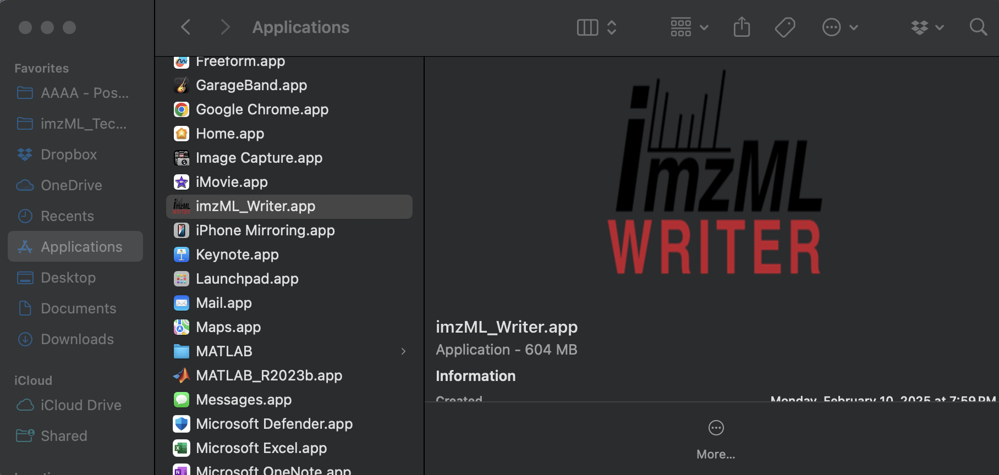
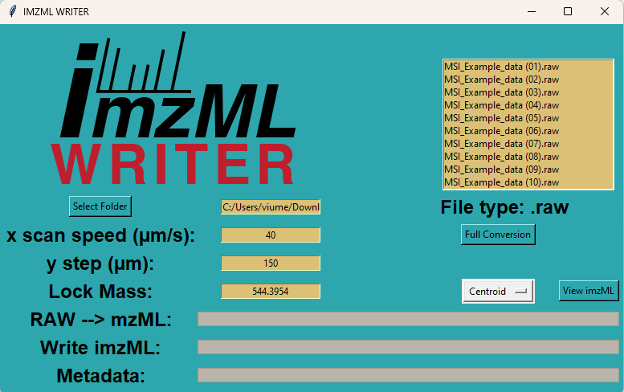
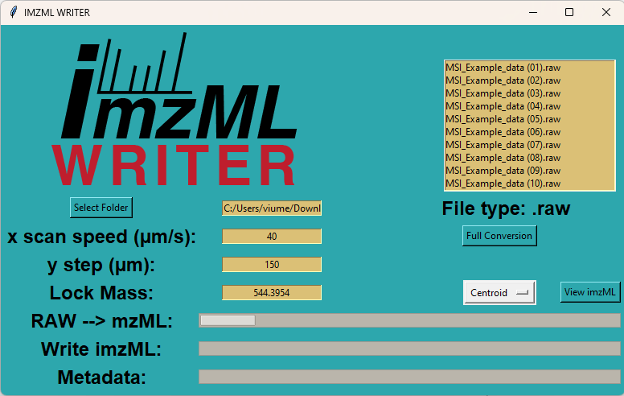
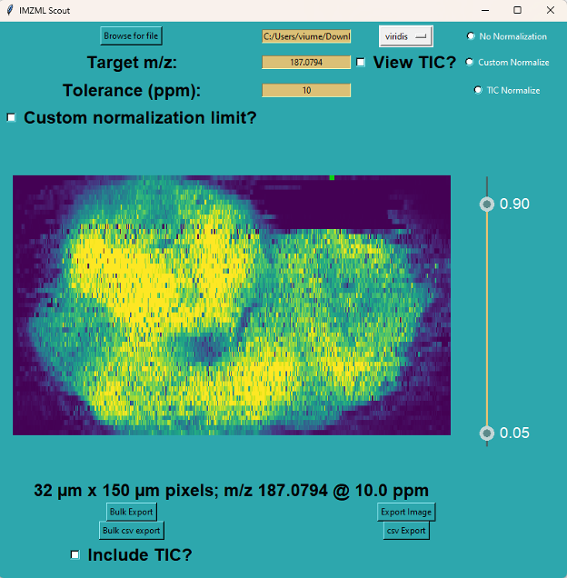
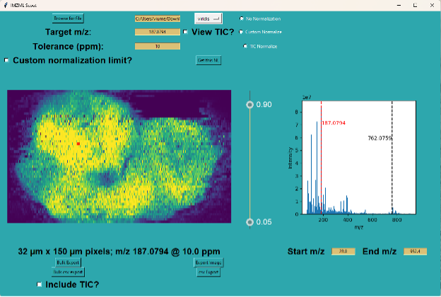
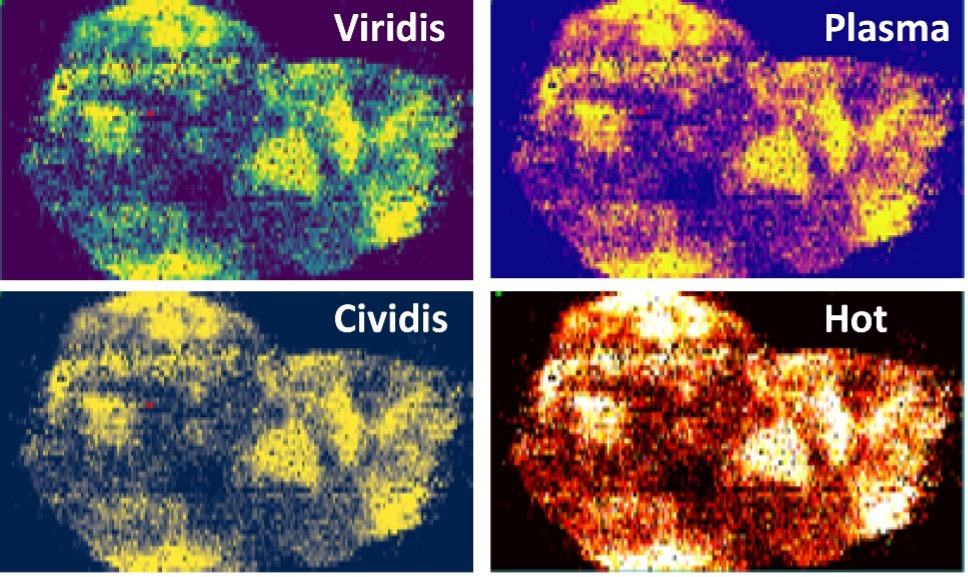
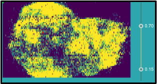
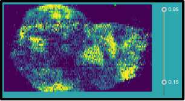

How to use the GUI
1. Launch
Launch imzML Writer by double clicking the .app / .exe:
Mac:
{kind=link}
PC
Or from python using:
import imzML_Writer.imzML_Writer as iw
iw.gui()
{kind=link}
2. Select target folder
Click select Folder to choose the directory containing the .raw, .mzML, or .imzML data files
{kind=link}
3. Specify imaging parameters
Type in the experimental parameters (i.e., X scan speed, Y step, Lock mass) and choose the MS data mode of interest (i.e., Centroid or Profile)
{kind=link}
- X scan speed (µm/s):
the speed at which the stage is moving, and the sample is scanned along the x direction
- Y step (µm):
stepping size in µm unit (the distance between two adjacent lines in the y direction)
- Lock mass:
m/z of a known ion (typically m/z of an internal standard). This serves as a reference point to correct any mass measurement errors that may occur due to instrumental drift or other factors.
- Profile:
This mode writes the continuous signal from the raw vendor data. Providing a richer dataset, but larger file sizes and longer processing times.
- Centroid:
Writes centroid data using msconvert’s peakPicking method.
4. Start the conversion
Select one of the conversion options (i.e., Full Conversion, mzML to imzML, or Write imzML Metadata). These should appear contextually based on the most-abundant file type in your directory. The process will then be begin and can be monitored with the progress bars:
{kind=link}
- Raw → mzML:
progress bar for the conversion of
.rawfiles to.mzMLformat.- Write imzML:
progress bar for the conversion of
.mzMLfiles to.imzMLformat.- Metadata:
Data from the source
.mzMLfile and user-input parameters are used to populate metadata in the.imzMLfile(s).
{kind=link}
5. View the image with imzML Scout
Choose an .imzML file from the file list once the process is complete. Files are split up by scan filters as specified in the mzML. You can view the selected imzML in imzML Scout by clicking view imzML:
6. Explore the data
{kind=link}
View, explore, and/or export the ion images of all m/z features in the chosen scan filter using imzML Scout.
Click on any pixel on the ion image, the pixel will turn red and the corresponding mass spectrum will be shown on the right.
{kind=link}
Within imzML Scout, you can select a new m/z to view in two ways:
- Target m/z:
Type in the mass-to-charge (m/z) in the input field (e.g., 187.0794 is the red peak on the spectrum)
- Mass spectrum:
Hover the cursor over the mass spectrum and click on the desired m/z (e.g., 762.0759 – black peak).
The mass spectrum can be zoomed in by punching in the Start m/z and End m/z to able to click on the low abundant peaks.
Additional parameters can be specified as well:
- Tolerance (ppm):
The isolation width (full window; ppm) around the measured mass-to-charge (m/z) that is summed to generate the image.
- Normalization Method:
Select from TIC normalization, custom (e.g. internal standard) normalization, or no normalization.
If desired, a custom normalization can be applied (e.g. to compare absolute abundances across images):
You can also generate the TIC image by checking the View TIC image button:
Colormaps can be specified from matplotlib’s `standard colormaps<https://matplotlib.org/stable/users/explain/colors/colormaps.html>`_, with several common maps included in the base install:
{kind=link}
You can adjust the contrast settings by sliding the bars to right of the image:
 {kind=link}
{kind=link}
imzML Scout also supports batch export of images in several image formats (TIF, png, jpg) or as a numeric matrix (csv). To batch
export, click the Bulk export or Bulk CSV export button and navigate to the target spreadsheet (.xlsx) specifying which images to export in the form:
{kind=link}
The include TIC? checkbox specifies whether the TIC image / TIC array should be included in the bulk export.
Single targeted m/z can be also be exported by choosing either Export Image or csv Export.